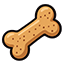
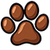

This Website is AWESOME!
This website has some subtext that goes here under the main title. It's a smaller font and the color is lower contrast. Also Max loves you.
INFO: Max has absolutely nothing going on betwixt his eyes. Not a singular thought.


This is Max's Bone. There are many like it, and they are probably stuffed under my couch...
This is Max's Bowl. He never drinks from his bowl. The garden hose water tastes much better according to him.
This is Max's Paw Print. We took this for booking purposes into his kennel when he was caught digging up the garden.
This is Max's Toy. This is one of many toys. His royal barkness prefers an old sock, but his knot ball is a close second favorite.
An Inspiring quote or testimonial from Max the Ween? No chance. He spends his days lazing about on the couch, barking at the wind and sometimes the mailman. If he's being a particular sweetheart, he may even convince someone to give him his favorite treat: a Slim Jim!
-Me, completely not governed by a small fuzzy barking football. (probably)
Max wants to play! C'mon!
Lets face it, you know you wanna.